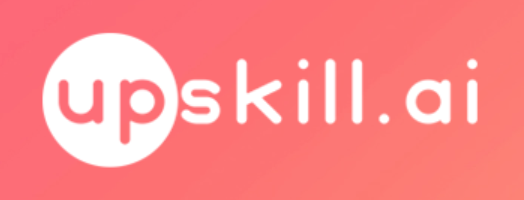
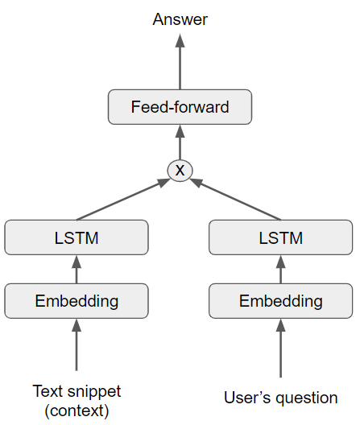

Chatbot-Sam is a Python module for an intelligent conversational chatbot. Although never officially released, its draft version was built as part of the Upskill.ai startup idea. Upskill.ai in turn, was part of another small Australian company called Faststores, now rebranded to Blaze Online. Complicated yes.
The Upskill.ai project
The idea behind Upskill.ai was to build software that will enhance people's learning on a closed topic. The Minimum Viable Product version was planned to have a conversational chatbot with "some" knowledge in a given domain, connected to an augmented face giving a realistic delivery of chatbot's answers. A huge idea, and a heaven for Machine Learning engineers.

Intent recognition
The conversational, or question-answering domain is still a hot research topic in AI, and probably one still missing an enabler technology. Usually chatbot solutions are made up of multiple sub-systems, each capable of doing some part of the work. Same goes for Chatbot-Sam: depending on the intent of the user's question, the question was forwarded to the sub-module which is trained to give an answer in that domain.
A crutial part here is our "intent recongizer" which is trained to estimate the user's intent, given his question. Once we built this part, we could break up the problem in many smaller parts and address each separately. An easy way to build intent recognition is with Wit.ai.
Open-domain QA - the Deep learning module
At the time of developing Chatbot-Sam, Deep learning seemed to be the best approach to build "intelligent" chatbots. Of course, we tried this approach using an encoder-decoder type of recurrent neural networks (RNNs) where a user's question is passed in the encoder, and the decoder uses the encoder's input and generates an answer. Here are a few useful resources to get started: DeepQA, WildML, Google's paper.
The downside of this approach is the needed training set of question-answer pairs. This is especially a problem if we're building a chatbot in a closed domain - you'd need to spend lots of time to assemble a nice dataset in a given domain. In our case, we experimented with a few different movie subtitle datasets (OpenSubtitles, Cornell, Ubuntu), while more datasets can be found in this paper.
Our DL model trained on a movie dataset was only able to give satisfying answers in some everyday questions (eg. "what color is the sky at night?"). Therefore it was used as a "default" module, i.e. the intent recognizer will only forward a question to it, if no other module is capable of giving a good answer.
Closed-domain QA: The rule-based module
Some questions are more or less easy to answer. For example "what's your name?" or "where do you come from?". When the intend recognizer detects such question, it forwards it to the rule-based module, where the answer is hardcoded. We could deliver more interesting answers by adding randomness using numpy.random in the sentence composition part.
Closed-domain QA: The Deep learning module (2)
After some time experimenting in the open-domain DL module, we reached a nice solution of training a DL model in the closed-domain. The solution uses a multiple input single output model. The first input branch processes the user's question, while in the second one we feed a text snippet containing the answer to the question. Both branches can use Long-Short Term Memory (LSTM) cells. The network is trained in a supervised way, by providing the answers in the output.

Deployment in production
Our team at Upskill.ai used the Google Cloud for both development and deployment. Chatbot-Sam was deployed in GCP in a small webapp internally for the Upskill.ai team. Unfortunately, all the building blocks of Upskill.ai (including text-to-speech, lip-syncing and face composition modules) were never deployed together as a single product.